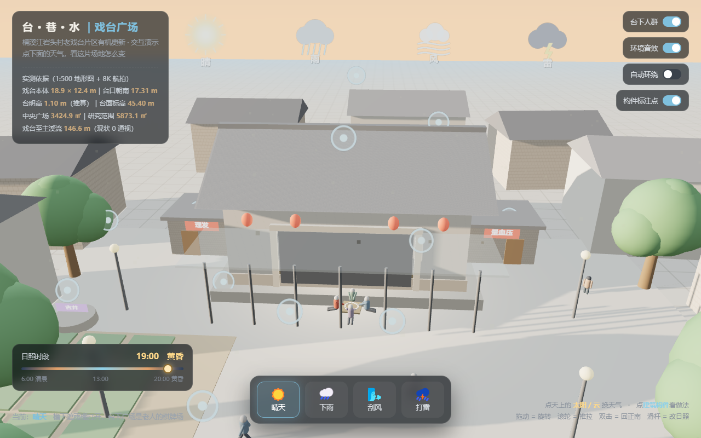

环境设计专业，做空间设计与空间交互。毕业设计《台·巷·水》研究楠溪江岩头村老戏台片区的有机更新——从实测、病理诊断到分区分时设计，并把方案做成能走进去看的交互场景。
参考 cactusdigitale.com 的空间立方体：你站在里面，作品在四面墙上不断重新排布；点任意一面墙，就从"星座视图"贴到"超特写"。

六面墙 = 六个项目位。拖动旋转、滚轮推拉、点墙面进入特写；墙上内容每 6 秒自动轮换一次，形成不停流动的作品流。
进入作品空间 →前两项是已交付的成果，可以直接打开；后几项等你的图纸与照片补进来。
用 2008 年实测 1:500 地形图的 175 个标高散点插值出真实地形，167 处建筑按测绘材质层数拉伸；等高线、水系、道路全部来自实测数据，可飞、可点。
方正封闭的影剧院式戏台，四种天气 + 日照滑杆 + 13 处构件点击做法说明。真 3D，可直接转视角。
点一下雷云：天压暗、暴雨、闪电；牌桌和四位老人自动挪进檐下，路人撑起伞——用天气讲分时设计。
总平、剖透视、分时场景效果图。你把图纸发我，我按这个网站的版式排进去。
等你补素材教育经历、课程、技能、获奖、联系方式。格式不限，照片、截图、Word 都行。
等你补素材你说想看海外的好作品、好理念。这些是我按"能直接看到好设计"筛出来的，前四个最值得天天刷。
环境设计专业在读，毕业设计《台·巷·水：楠溪江岩头村老戏台片区有机更新设计》。做的方向是空间设计与空间交互：一边用实测数据做设计决策（面积、标高、视线、人流），一边把方案做成能走进去、能点、能换天气的交互场景。
这套作品站目前是第一版骨架——作品空间、作品列表、灵感导航已经能用；简历、图纸、照片等你的素材补进来。